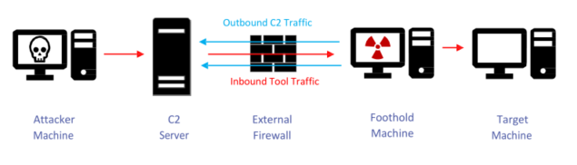
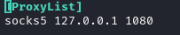

Dynamic Port Forwarding

Dynamic Port Forwarding unlike Local/Remote Port Forwarding allows a communication not on a single port, but across a range of ports.
Tools that we ca use to Access to the Tunnel Created
• Proxychains
1) configure proxychains
Proxychains is a tool that forces any TCP connection made by any given application, to follow through proxy like SOCKS4, SOCKS5, TOR and so on...
We have to configure proxychains to match the host(SRVHOST) the port(SRVPORT) that we choose for our proxy server when we have used the modul
◇ socks4
root@kali:/# echo "socks5 127.0.0.1 1080" > /etc/proxychains.conf

◇ socks5

2) Run commands through proxychains
Before the command we have to add proxychains so the command will be forced to run through it.
examples:
root@kali:/#
root@kali:/# proxychains -q nmap -sT -Pn -T5 -n --top-ports 100 10.100.40.107 #use -sT in proxychains, -sS could not work
root@kali:/# proxychains -q nmap -sTV -Pn -T5 -n --top-ports 100 10.100.40.107 #-sTV == -sT + -sV
root@kali:/# proxychains ssh 192.168.1.23
root@kali:/# proxychains telnet 192.168.1.23
root@kali:/# proxychains iceweasel #access to internal website like if we are on victim machine
root@kali:/# proxychains -q hydra -C telnet.txt telnet://10.32.121.23 -V |& tee #with -V (verbose) could be too much verbose
#mostly if we have a lot of combinations of user/password
proxychains could give us a lot of debug information...

to avoid that we could use the quiet mode (-q)
proxychains -q nmap -sT -Pn -n 192.168.1.23 --top-ports 100
ATTENTION: with proxychains use always the options “-sT -Pn” (also with scripts)
◇ if we see more requests in loop with nmap, is because we have used -sV that need to take more informations!


• FoxyProxy
While Proxychains is a good option when working with CLI tools, but if working in a web browser to access a webapp through a proxy, there is FoxyProxy.
Note that we can also start Firefox with Proxychains and then access to the target host
Bibliography:
• https://unix.stackexchange.com/questions/115897/whats-ssh-port-forwarding-and-whats-the-difference-between-ssh-local-and-remot
• https://zaiste.net/posts/ssh-port-forwarding/
• https://pen-testing.sans.org/resources/papers/gwapt/tunneling-pivoting-web-application-penetration-testing-120229